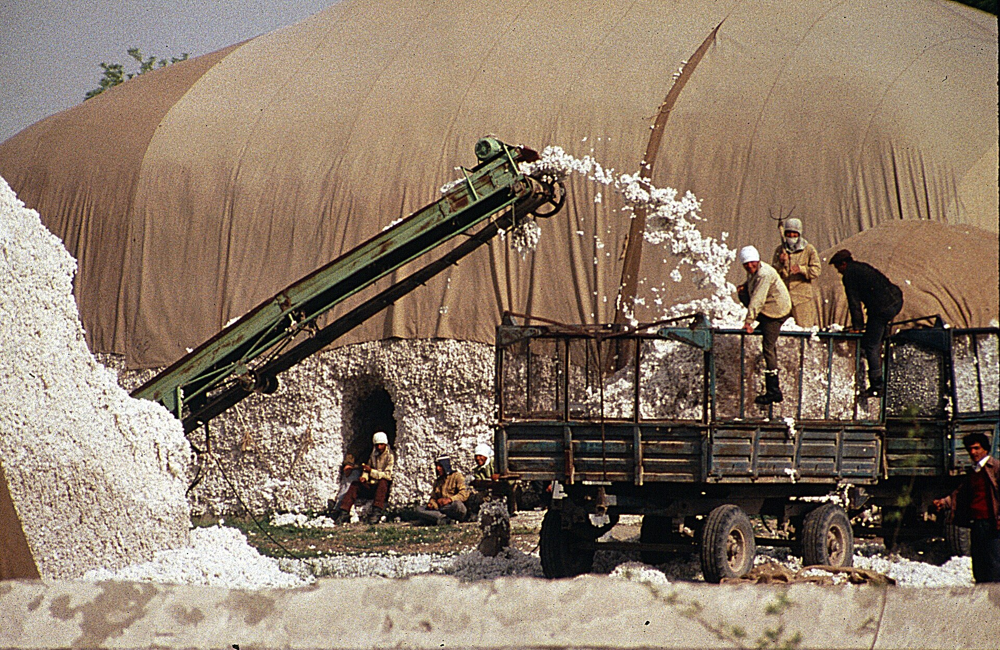

Uzbek migration in the Soviet period: propiska, cotton and low mobility (1920s–1991)
Today's Uzbek labour migration — leaving for Russia and other countries — is mainly a post-1991 phenomenon. In the Soviet period the picture was different: movement was state-directed and limited, the propiska (residence registration) system tied people to a place, and the cotton monoculture bound rural Uzbeks to the kolkhozes. In their own records Soviet demographers noted that Central Asians, Uzbeks among them, moved far less across the union than other Soviet nationalities. At the same time Uzbekistan's cities — especially Tashkent — grew through the in-migration of Russians and other Slavs. Based strictly on verified academic and encyclopedic sources.

The mass Uzbek labour migration seen today — often departure for Russia — took shape after the USSR dissolved in 1991. In the Soviet period (roughly the 1920s to 1991) movement was different: it was state-organized, controlled through the propiska, and limited in scale. Below, that period is described strictly on the basis of verified sources — academic studies and encyclopedias. Soviet demographers themselves repeatedly recorded that Central Asians, Uzbeks included, migrated very little within the union (labour immobility).
Propiska: residence registration and controlled movement
The Soviet internal passport system was introduced in 1932; the attached propiska (compulsory registration of place of residence) tied every citizen to a specific address. Moving to a new city required a job and housing in advance, and therefore a propiska — making movement subject to permission rather than free. For a long time collective farmers were not issued internal passports at all, and leaving the countryside was especially difficult. As a result, labour movement was state-directed rather than spontaneous.
The cities grew, but Uzbeks stayed rural
Under the USSR Uzbekistan industrialized rapidly and its cities expanded, yet a demographic imbalance persisted: most Uzbeks continued to live in the countryside, while the urban population was shaped largely by Russians, other Slavs and other groups who had settled there. Unlike most regions of the USSR, a large share of Central Asia's population (around 60 percent) remained rural. The Slavic population, by contrast, was almost entirely urban and concentrated mainly in industrial centres, especially Tashkent Oblast.
Tashkent's Russian population
The 1926 census recorded 241,000 Russians in Uzbekistan — about 5.4 percent of the republic's population — and the majority of them lived in cities, particularly Tashkent (where Russians then made up roughly 13 percent of inhabitants). During the Second World War the evacuation of many Russians and Ukrainians further changed Tashkent's demographic make-up. Thus the city's growth came largely from population arriving from outside.
The cotton monoculture and a countryside bound to the kolkhoz
Uzbekistan's economy was oriented toward cotton — 'white gold' — in the Soviet period: the republic supplied a large share of all-union cotton (in some periods close to 70 percent). Cotton was grown on large collective and state farms, typically holdings of 2,000–3,000 hectares. This monoculture bound much of the rural Uzbek population to the land and to the collective farms: the rural labour force was directed at fulfilling the cotton plan, and leaving the village was naturally constrained.
Orgnabor and state resettlement programs
In the USSR labour was distributed by the state through orgnabor (organized recruitment): between 1930 and 1970 roughly 28 million people were relocated through this system. Recruitment fell sharply after 1951 — only 573,100 workers were resettled in 1966–1970. In Central Asia the state more often brought in labour from outside — from Russia, for mining, railways and construction — while moving the local population to other parts of the union proved difficult.
Low mobility: what the demographers recorded
Soviet demographers complained of the 'absolute reluctance' of Central Asia's working-age population to migrate to other regions, attributing it to education levels, cultural differences and people's satisfaction with their home regions. As researcher Delia Rahmonova-Schwarz notes, labour movement from Central Asia to Russia is not unique to the post-Soviet period — for example, in 1978–1979 several thousand Uzbeks were sent to Russia's Non-Black-Earth zone to develop agriculture. Even so, the overall level remained low: Uzbeks migrated notably less than other large nationalities of the union.
Educational migration: studying in Moscow and Leningrad
One channel of movement was education. The Soviet higher-education system was centralized, with the Ministry of Higher and Secondary Specialized Education in Moscow and a partner ministry in Tashkent. To train national cadres, Uzbek students were sent to study in Moscow, Leningrad and other centres; a solid command of Russian was required for higher education. By 1934 Uzbeks made up roughly 47 percent of new university admissions in Uzbekistan. This channel was often temporary — going away to study and returning.
The 1966 Tashkent earthquake and all-union reconstruction
On 26 April 1966 a strong earthquake struck Tashkent (moment magnitude 5.2; epicentre in the city centre). At the time the city had about 1.1 million inhabitants (roughly 1,092,000 in 1965). The quake left 200,000–300,000 people homeless. Reconstruction became an all-union mobilization: many builders came to Tashkent from other republics — by various accounts more than 25,000 builders in 1966–1967, including 10,000 from Russia and 4,500 from Ukraine. By 1970 nearly 100,000 new homes had been built. Some of the workers stayed in Tashkent after the work was done — further changing the city's ethnic composition.
Conclusion: internal, state-directed, limited movement
For Uzbeks the Soviet period was largely one of internal, state-directed and limited movement: the propiska tied people in place, cotton bound them to the land, and the cities grew through population arriving from outside. Mass Uzbek labour migration — to Russia and other countries — is a post-Soviet phenomenon, arising after 1991 from the breakup of the collective farms, unemployment and a widening gap in living standards between countryside and city. It is the sharp reverse of the Soviet-era picture.
Sources
- Delia Rahmonova-Schwarz, “Migrations during the Soviet Period and in the Early Years of USSR's Dissolution: A Focus on Central Asia” (REMI)
- Paul Stronski, Tashkent: Forging a Soviet City, 1930–1966 (PDF)
- Wikipedia — 1966 Tashkent earthquake
- Encyclopaedia Iranica — Central Asia II: Demography
- Internal Migration (propiska) — Eurasianet: “Uzbekistan sustains poverty by blocking internal migration”
- Encyclopedia of Ukraine — Organized recruitment of workers (orgnabor)